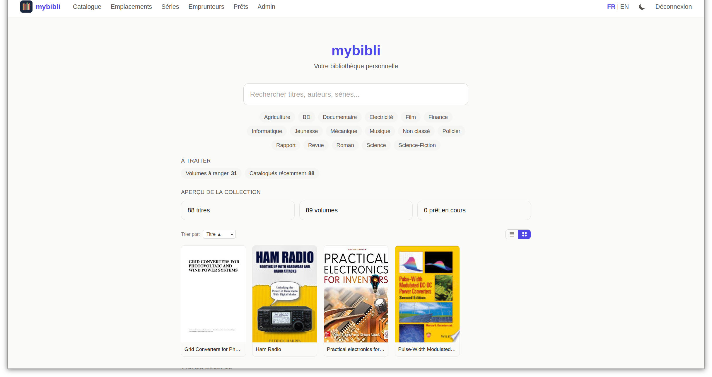
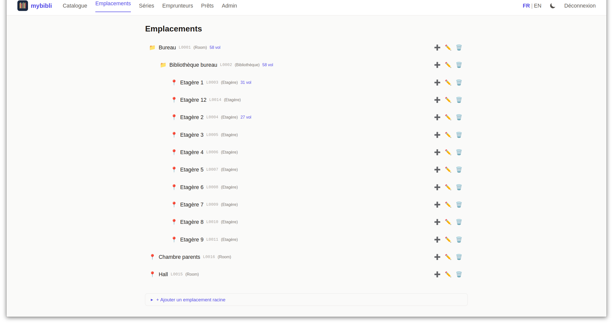

Barcode-first cataloging
Scan an ISBN or EAN-13. Title metadata resolves asynchronously through a chain of seven providers — BnF, Google Books, Open Library, MusicBrainz, OMDb, TMDB, BDGest — with cover-image download.
mybibli is a self-hosted web app to catalog, locate, and loan your personal library. Barcode-first, multi-media, multi-role — and your data never leaves your network.
Screenshots from the household NAS install that drives the project — same code that's on Docker Hub right now.


Built for collectors who want their library to actually work. Scan a barcode, find a book on a shelf, lend it to a friend — and see what's missing in a series.
Scan an ISBN or EAN-13. Title metadata resolves asynchronously through a chain of seven providers — BnF, Google Books, Open Library, MusicBrainz, OMDb, TMDB, BDGest — with cover-image download.
Books, BD/comics with multi-position omnibus volumes, audio releases, films and series — each typed correctly with the right provider chain selected automatically.
See which volumes are missing in your series at a glance. The dashboard surfaces "series with gaps" alongside Dewey-based browsing and a similar-titles section.
Configurable hierarchy — room → shelf → row, or whatever fits your home. Each shelf gets a barcode; scan the shelf, scan the volume, done.
Borrower CRUD, loan registration, automatic location restoration on return, admin-configurable overdue threshold, per-borrower history.
Anonymous (read-only), Librarian (catalog + loans), Admin (everything). Session inactivity timeout with keep-alive toast. EN / FR language toggle, per-user.
Self-hosted means your home network. So mybibli is built defensively from day one — not as an afterthought.
No unsafe-inline, no unsafe-eval. Every template — server-rendered or HTMX fragment — is audited for inline script and style attributes.
Constant-time compare on every state-changing request. Forms inject the token automatically; HTMX inherits via a small JS listener. Exempt-route allowlist is frozen and policed by tests.
A USB barcode burst that arrives while a modal is open is intercepted at document-capture phase — no leakage into background scan fields, no accidental Cancel/Confirm activation.
No cloud sync, no telemetry, no analytics. Argon2 password hashing, HttpOnly + SameSite cookies, soft-delete with 30-day auto-purge.
Server-rendered HTML, type-checked templates, no SPA framework. The whole UI talks to the server with HTMX over the same routes that serve the pages.
Compiled binary, async tokio runtime, zero-cost middleware tower stack.
Compile-time query checking via the offline cache. Versioned migrations checked into the repo.
Compile-time type-checked Jinja-style templates. Auto HTML-escaping, no surprises.
No build step beyond Tailwind. Server-rendered HTML; small ES modules where the UX needs it.
Cookie-based sessions, per-session CSRF synchronizer token, role-based access control.
English + French today, key-by-key parity enforced by tests. New languages drop in as a single YAML file.
~525 unit, ~95 DB integration, ~160 Playwright E2E across two CI lanes (seeded + wizard).
Rust tests + clippy + sqlx-prepare check, DB integration, Playwright E2E and wizard E2E — gated on every PR.
All ten epics shipped. mybibli is in production on the household NAS that drove the project. v1.1.8 is the latest production-feedback patch — closes the third bug of the cover-fallback saga: editing a title's genre no longer pollutes manually_edited_fields, so re-classified titles finally hit the direct-apply branch on Re-fetch and pick up the Open Library cover when one exists. The release also brings the first illustrations to the README, the manual and this site. Pre-built Docker images on Docker Hub. Watch the repo for polish iterations and production-driven fixes, or jump into the issues.